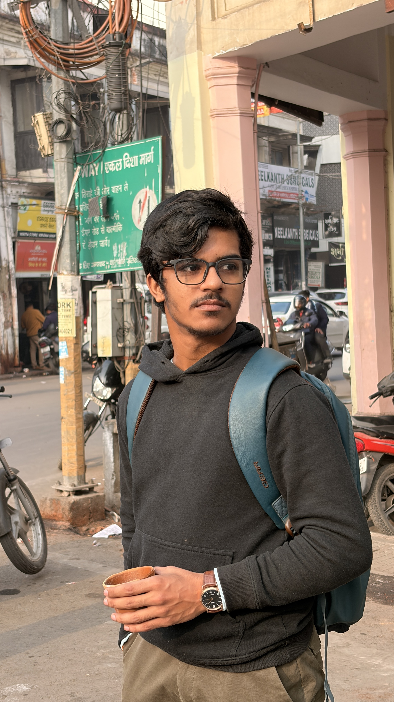

B.Tech in Computer Science (2023 – 2027)
I enjoy combining design, logic, and continuous learning to build projects that are practical, clean, and growth-oriented.
I am Aditya Pratap Singh, a passionate and detail-oriented Web Developer, Software Developer, and Data Analyst, currently pursuing my Bachelor’s degree in Computer Science and Engineering at Babu Banarasi Das University.
I have a strong interest in designing and developing modern, responsive, and user-centric web applications using HTML, CSS, and JavaScript. I focus on writing clean, maintainable, and scalable code while ensuring smooth user experience and performance optimization.
Along with web development, I actively work on strengthening my programming fundamentals using Java and Python. I enjoy solving real-world problems using data structures and algorithms, which helps me improve my logical thinking and problem-solving abilities.
I am also deeply interested in data analysis, where I work with tools such as Pandas and NumPy to analyze datasets, identify patterns, and extract meaningful insights. I believe that data-driven decision-making plays a crucial role in building intelligent and efficient software solutions.
I strongly believe in continuous learning, self-discipline, and practical implementation of concepts through real-world projects. My goal is to grow as a skilled software professional and contribute effectively to impactful and innovative technology-driven solutions.